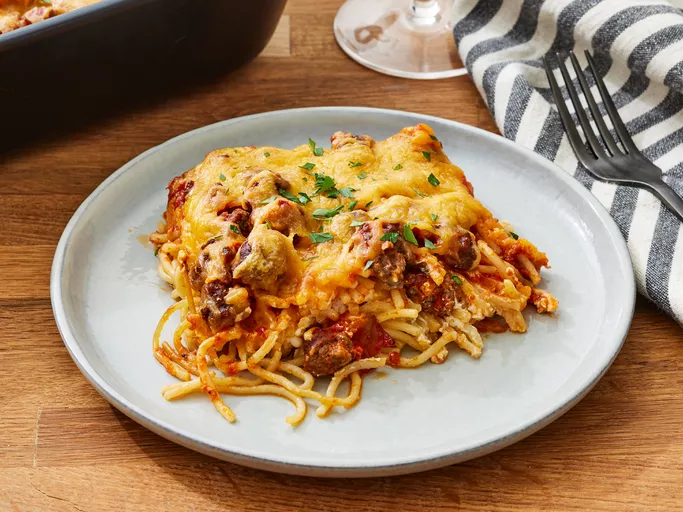

Million Dollar Spaghetti

Description:
Million dollar spaghetti is the perfect combination of noodles, lean ground beef sauce, cottage cheese, cream cheese, and sour cream. It's unbelievably good! Serve with garlic bread and salad.
Ingredients:
- Spaghetti: An 8-ounce package of spaghetti should make about eight servings.
- Beef: You’ll need a pound of lean ground beef. You can use a mix of ground beef and ground turkey, if you prefer.
- Spaghetti sauce: Use a jar of store-bought spaghetti sauce or make your own marinara sauce at home.
- Butter: Use a stick of sliced butter to prepare the pan and to add richness and flavor to the baked spaghetti.
- Cottage cheese, cream cheese, and sour cream: A mixture of cottage cheese, cream cheese, and sour cream is essential for this decadent, creamy spaghetti sauce.
- Cheese: Shredded Cheddar cheese is the perfect finishing touch for this million dollar spaghetti.
Steps:
- Boil the spaghetti in salted water, then drain and set aside.
- Cook the beef on the stove and discard the grease. Transfer to a bowl and mix in the spaghetti sauce.
- Prepare the baking dish, then spread half of the noodles in the bottom.
- Top with the mixture of cottage cheese, cream cheese, and sour cream.
- Cover with remaining spaghetti and butter.
- Pour the beef mixture over the spaghetti and spread in an even layer.
- Bake for 30 minutes, top with Cheese, and continue baking until the cheese is melted.